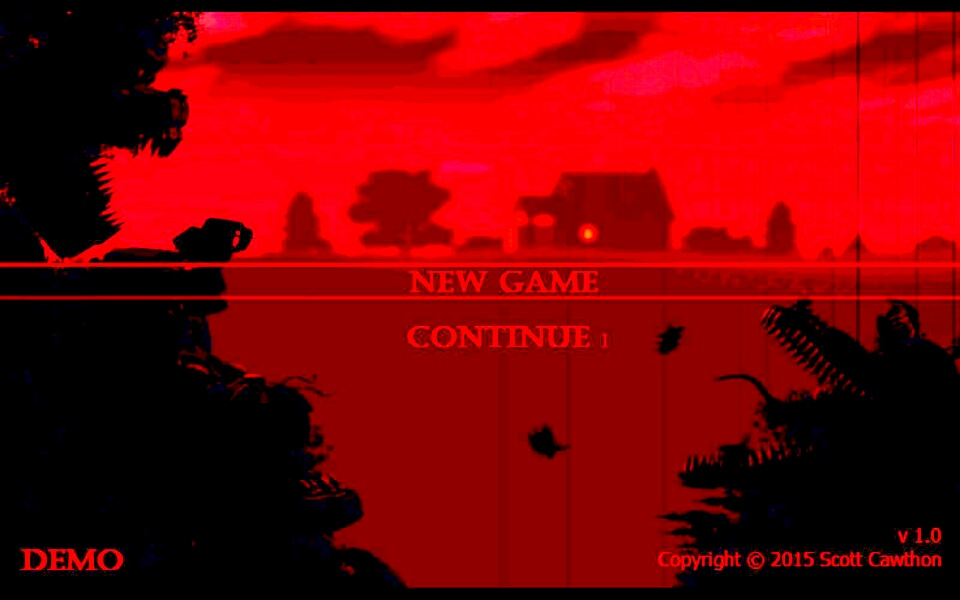

FNAF 4


What is it that you think you see?
- This time, the terror has followed you home.
- In this last chapter of the Five Nights at Freddy's original story, you must once again defend yourself against Freddy Fazbear, Chica, Bonnie, Foxy, and even worse things that lurk in the shadows. Playing as a child whose role is yet unknown, you must safeguard yourself until 6 AM by watching the doors, as well as warding off unwanted creatures that may venture into your closet or onto the bed behind you.
- You have only a flashlight to protect yourself. It will scare away things that may be creeping at the far end of the hallways, but be careful, and listen. If something has crept too close, then shining lights in its eyes will be your end.
- In this last chapter of the Five Nights at Freddy's original story, you must once again defend yourself against Freddy Fazbear, Chica, Bonnie, Foxy, and even worse things that lurk in the shadows. Playing as a child whose role is yet unknown, you must safeguard yourself until 6 AM by watching the doors, as well as warding off unwanted creatures that may venture into your closet or onto the bed behind you.
- You have only a flashlight to protect yourself. It will scare away things that may be creeping at the far end of the hallways, but be careful, and listen. If something has crept too close, then shining lights in its eyes will be your end.
Characters
Stars
Five Nights at Freddy's 4 is the first game in the series to feature more than 3
stars:
1. Beat Night 5.
2. Beat Night 6.
3. Beat Night 7 aka Nightmare mode.
4. Beat Night 8 aka 20/20/20/20 mode.
1. Beat Night 5.
2. Beat Night 6.
3. Beat Night 7 aka Nightmare mode.
4. Beat Night 8 aka 20/20/20/20 mode.
Gameplay
- Five Nights at Freddy's 4 is a departure from the conventional series format in
many ways. Most notably, rather than playing as a security guard in an office
defending against roaming animatronics, the main protagonist is a child in their
bedroom warding off twisted monster versions of the well-known Freddy characters.
Security cameras are not present so the player must rely on environmental noises to
tell if something is approaching or about to attack. Also, where the previous games
could be played by frantically clicking between screens and defenses, the pace at
which the game is played must be slowed down considerably, as making a move without
waiting for cues can easily result in a Game Over.
Audio
The main menu music (PC version).
The main menu music (Mobile and Console versions).
Development
- The game was first announced shortly after Scottgames.com's missing hat teaser was put up. The
first teaser revealed a nightmarish bear animatronic, later on revealed to be Nightmare Freddy.
The next three teasers showed more of the Nightmare Animatronics, Nightmare Bonnie, Nightmare
Chica, and Nightmare Foxy. The fifth teaser revealed the hat and bowtie of Nightmare Fredbear
under a spotlight. Soon after, an image of Nightmare Fredbear himself appeared, in greyscale
except for his hat and tie. The seventh and final teaser revealed Plushtrap and the Hallway.
- On July 23, 2015, Scott released Five Nights at Freddy's 4 on its Steam page, the page containing various in-game screenshots and the trailer.
- On July 23, 2015, Scott released Five Nights at Freddy's 4 on its Steam page, the page containing various in-game screenshots and the trailer.
Reception
- Five Nights at Freddy's 4 received mainly mixed reviews from professional critics. The game
was given an aggregate score of 53.33% from GameRankings based on 3 reviews and a 50/100 from
Metacritic based on 5 reviews.
- Unlike the previous three installments, however, the critics are largely divided from one another on several factors that the fourth game presents. The Escapist and Gamezebo praised the game for the intense environment, darker and emotional storyline, creepy ambience noise, and frightening jumpscares, while reviewers such as Destructoid criticized the same factors, stating the new mechanics were "an easy, dull, obvious trick", and noted being confused on what to do several times.
- Unlike the previous three installments, however, the critics are largely divided from one another on several factors that the fourth game presents. The Escapist and Gamezebo praised the game for the intense environment, darker and emotional storyline, creepy ambience noise, and frightening jumpscares, while reviewers such as Destructoid criticized the same factors, stating the new mechanics were "an easy, dull, obvious trick", and noted being confused on what to do several times.